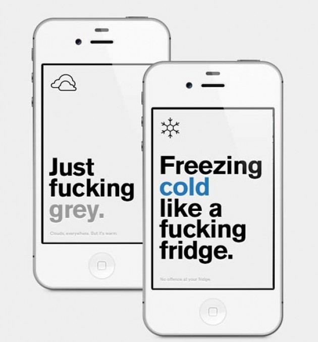
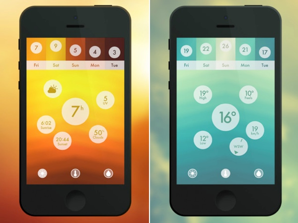
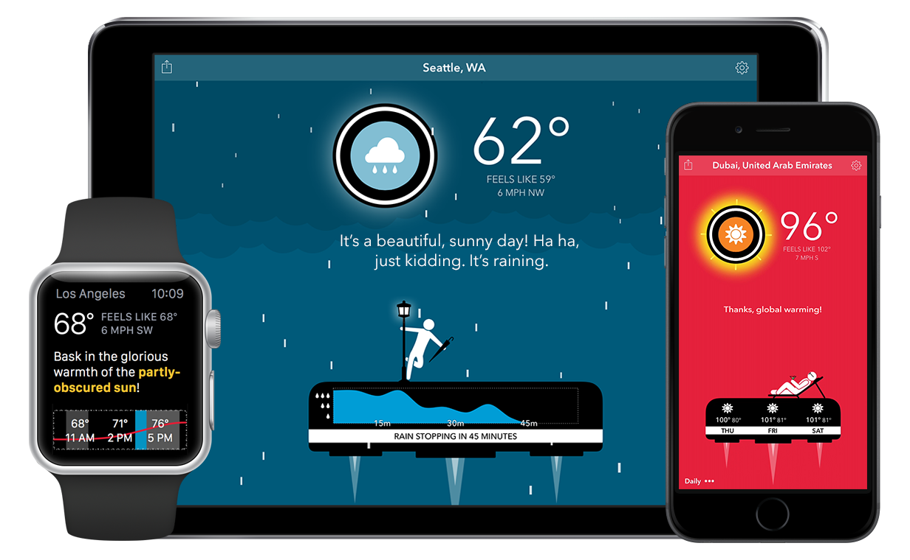

Research Page
From a quick google search you can clearly see how many different types of weather apps there are available out there. Although the all range in style, content, imagery and usability they all can do the basic function that makes them useful and so popular which is providing us with weather information for cities all over the world.
Existing Apps
I decided to begin my research by looking at some of the most popular weather apps that we use on a day to day basis. I looked at both Android and iOS applications, some of which are available on both platforms. As I looked through the various apps I noted the features that appeared frequently which included imagery or icons symbolising the weather type along side a large temperature indicator which makes it easy for users to get an idea of the weather from a quick glimpse. Another common feature was the incorporation of an hour by hour/day by day weather forecast which is helpful for users if they would like to see the weather over a period of time. These are features that I intend on including in my own designs because they seem to be the most important basis to a weather app. A few apps in particular caught my eye for various reasons which are the following.
1. Authentic Weather by Tobias van Schneider
Tobias van Schneider is a German designer that currently lives in New York City. He has won various awards for his work and is a well known contributor to Dribbble with nearly 15 thousand followers. Some of his clients include BMW, Sony and Google to name a few. So of course when it came to him designing a weather app it was going to be quite something. I checked out his designs on his behance account which perfectly sells his weather app in the most simplistic and effective way. One of his reason of creating this weather app was to get straight to the point and provide explicit information about the current weather along with a brief message, He describes it as “Probably the most honest and human weather app”. With the use of simple line icons and bold text making up the majority of the app it is effective and gets the job done.
2. Morning Rain - iOS Weather App by Roberto Nickson
With nearly 20,000 followers on Bechance and being CEO of Muse Works, Roberto Nickson’s Weather App is quite gorgeous. It is an application that has given me a lot of inspiration for my own app from its various features that I think make it work so well. Some of its features include the option to choose between Fahrenheit and Celsius, a 5-day forecast, beautifully photographed backgrounds that reflect the current weather as well as the incorporation of an easy to use interface with subtle animations.
The imagery that its used within this weather app are stunning which I personally think makes it so pleasant to use. With the incorporation of simple icons and easy to understand information the app does exactly what a good weather app should do and tell you the weather.
3. Haze - Weather App by Robocat
Haze is an absolutely stunning weather app developed by the team at Robocat based in Copenhagen. At a glance Haze provides you with visual information based on the current and future weather. A five-day forecast is provided which when swiped through give the user more information on the weather. Haze believe in not reading what the weather is going to be like but see it through the beautifully animated backgrounds which show you the weather trends in a polished audiovisual experience. I think this app is visually stunning and it has an extremely intuitive interface which works beautifully with users needs and wants.
4. CARROT Weather by CARROT
Described as the “Weather robot with a personality” CARROT Weather is an extremely accurate weather app which will tell you down to the minute when the weather is going to change. It takes a new twist on proving weather information by delivering “hilariously twisted forecasts”. With animated illustrations that change according to the weather the app in extremely interactive which makes it actually fun to use. With the inclusion of extra features such as a Time Machine which allows you to see the weather 70 years in the past and up to 10 years into the future. The feature of unlocking secret locations such as the moon or Mt. Doom, this app is seriously goes over and above when it comes to just telling the weather. CARROT Weather have taken a very different visual approach to their app compared to its competitors and have gone with a colourful flat design rather than illustrators that use subtle colours or photographs.
Styles
The weather apps that I studied all used different visual styles, all of which are very effective for their apps. Among the majority of weather applications that I have looked at the most popular style tends to be bright and vibrant colours such as blues, yellows and greens to reflect the weather. From looking at various apps I would like to adapt the approach that Haze went for and use subtle colours to give a visual experience for the user so they can identify the weather type just rom a glance. I will do this by creating different illustrations to reflect the different weather types such as rain, sunshine, snow, hot and cold. These will appear according to the weather in that particular location for example if it is raining in Belfast, the raining illustration will be displayed along with the weather information.
Interactions
Quite a few of the weather apps that I looked at had animations that were quite intense and sudden. I would like to replicate some of the animation style that is used in Haze where they move subtlety and gently. With the likes of falling snow, a gentle breeze or spitting rain to symbolise weather types according to the weather in that current location. It is common to see over use of animation on websites and apps, such slow fade ins. For my app I want everything to have a simplistic style, including the animation.
Final Design
For my weather app I went for an overall simplistic approach. I viewed various styles through Dribbble and Behance, and also went on walks to look at the sky and the colour changes depending on the weather type. Simplistic UI was my aim in this project, keeping unfitting css3 animation to a minimum, so I only wanted to use it for the rotation of the windmill blade, then use javascript for the weather types such as rain or snow. I wanted to keep all illustration to a flat design style and using only a few colours bar lines in the content that are shadows to emphasise the data.
If I had more time and experience
If I had more time and experience with Javascript I would change and fix a list of things within the weather app.
Mobile friendly
One of the things in the weather app that I would change would be the responsiveness of it and make it more mobile friendly, I tried to make the app work for smaller screens but with more knowledge and time it would have looked better.
Loading screen
I would have also added in a loading screen to the weather app to ensure that all the elements has loaded before the user is able to see them, however if a user had a bad internet connection or a low internet usage limit the loading page would be just another thing to load and may just be an annoyance. The fact that the information is displayed as soon as it is possible to the user is also a very good thing.
Wind speed
I had another idea that would be quite a nice way to display the information, it would include the little windmill that is in the middle of the screen. I could use the rotation speed of the windmill blade to indicate the wind speed. I would just do this by multiplying the wind speed from the API against the css3 rotation speed.
Seasons and time
If I had more time I would also add in seasons and time of day to the weather app, so the background image will change depending if it was spring, summer, autumn, winter and night or day. This will give the user more of an idea of the time they are using the app.
More weather information
Another thing I could add on to the weather app if I was to carry on the project in my own time is include all of the information provided by the API. Such as wind direction and speed, humidity… I wish I could have been able to add more of this information in to the weather app but I didn’t have enough time to design how it was to be displayed and also make it work.